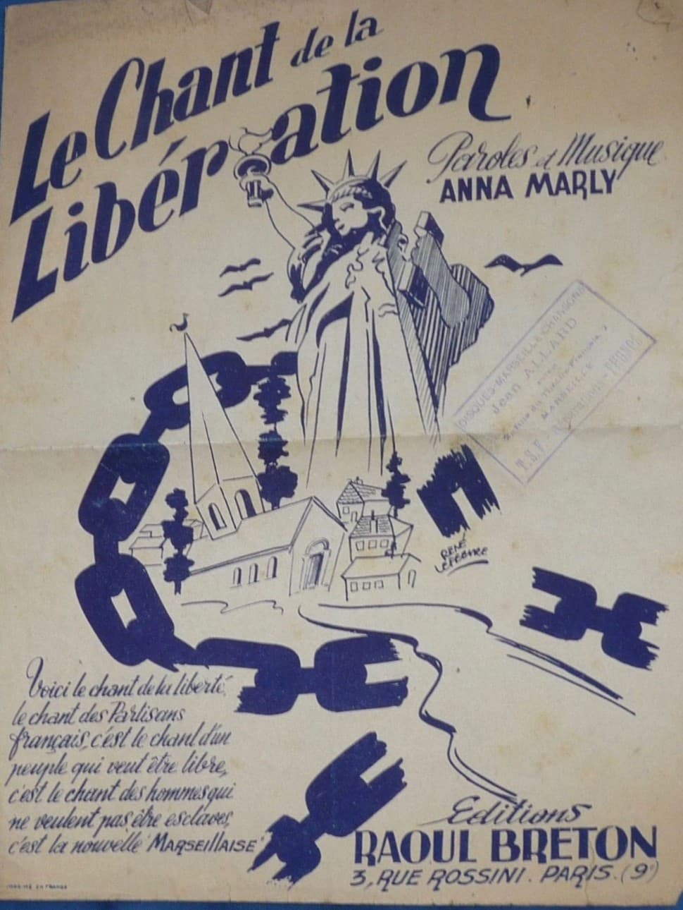
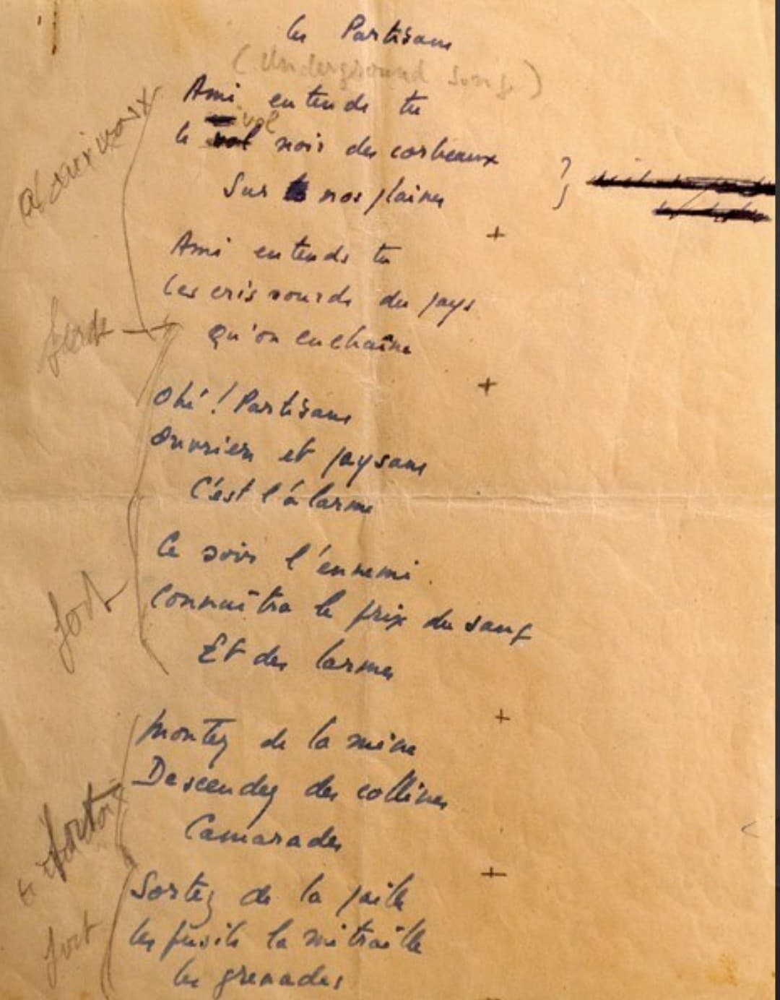

Origines, rôle du sifflement et analyse des paroles du chant de ralliement des maquisards

Surnommé la « Marseillaise de la Résistance », Le Chant des Partisans est l'hymne de la Résistance française durant l'Occupation nazi (1940-1944).
Véritable pont musical entre la France libre à Londres et les maquis de l'intérieur, ce chant incarnait à la fois l'urgence du combat clandestin, la fraternité des résistants et l'espoir inébranlable de la Libération.
La Musique : En 1941 à Londres, l'artiste d'origine russe **Anna Marly** compose la mélodie à la guitare. Elle s'inspire d'airs populaires slaves décrivant la lutte des partisans russes face aux armées ennemies.
Les Paroles : En mai 1943, l'écrivain **Joseph Kessel** et son neveu **Maurice Druon** (tous deux engagés dans la France libre) rédigent les paroles en français dans un cahier d'écolier pour donner à la Résistance un hymne officiel.
Pourquoi le sifflement ? L'introduction du chant est sifflée. Ce choix technique était capital : le sifflement radio traversait le brouillage allemand sur les ondes courtes de la **BBC** (émission *« Les Français parlent aux Français »*) et servait de signe de reconnaissance clandestin dans les maquis sans attirer l'attention de l'occupant.

Ami, entends-tu le vol noir des corbeaux sur nos plaines ?
Ami, entends-tu les cris sourds du pays qu'on enchaîne ?
Ohé, partisans, ouvriers et paysans, c'est l'alarme.
Ce soir l'ennemi connaîtra le prix du sang et des larmes.
Montez de la mine, descendez des collines, camarades !
Sortez des pailles les fusils, la mitraille, les grenades.
Ohé, les tueurs à la balle et au couteau, tuez vite !
Ohé, abandonne ton cheval, ton guidon, ton dromadaire...
C'est nous qui brisons les barreaux des prisons pour nos frères.
La haine à nos trousses et la faim qui nous pousse, la misère.
Il y a des pays où les gens au creux des lits font des rêves.
Ici, nous, vois-tu, nous on marche et nous on tue, nous on crève...
Ici chacun sait ce qu'il veut, ce qu'il fait quand il passe.
Ami, si tu tombes un ami sort de l'ombre à ta place.
Demain du sang noir séchera au grand soleil sur les routes.
Chantez, compagnons, dans la nuit la Liberté nous écoute...
Chaque vers du chant véhicule un message stratégique et poétique puissant :
Imprimé sur des feuilles volant parachutées par la Royal Air Force (RAF) au-dessus de la France, le texte s'est répandu dans les maquis comme une traînée de poudre.
Aujourd'hui encore, *Le Chant des Partisans* est interprété lors des cérémonies nationales du 8 mai 1945 et du 18 juin pour honorer la mémoire des hommes et des femmes de l'armée de l'ombre.
Page du Musée HOP WW2 – Section Histoire & Symboles de la France